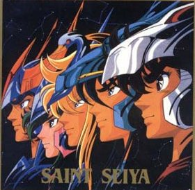

Saint Seiya

Useful Links
Anime Web Turnpike: Saint Seiya Links
(you have to scroll down a bit.)
Saint Seiya Game Guides Web Page
Gameboy Games
Saint Paradise Saikyou no Senshitachi
Nintendo Games
Saint Seiya Ougon Densetsu
Saint Seiya 2 Ougon Densetsu Kangetsuhen
Anime Video Game Resource Center © 1998 by
Luis A. Cruz